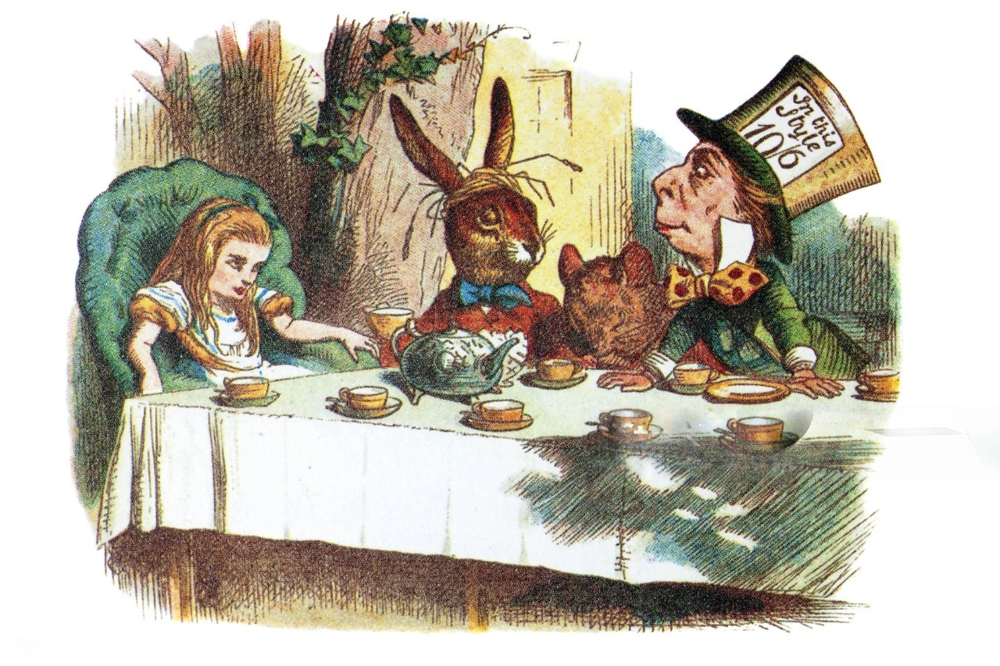

🐰 Alice in Wonderland
A Curious Girl's Big Adventure!
Alice follows a talking white rabbit down a hole and lands in a wonderland where nothing makes sense — and everything is magical!

🕳️ Chapter 1: Down the Rabbit Hole
Alice was sitting by her sister on a warm, sleepy afternoon when she saw something very strange — a white rabbit with pink eyes, wearing a waistcoat, glancing at a pocket watch and muttering, "Oh dear! Oh dear! I shall be late!" Alice had never seen a rabbit in clothes before. Burning with curiosity, she jumped up and ran after him, right down a large rabbit-hole under the hedge.
The hole went straight down like a deep well, and Alice fell and fell — past cupboards, bookshelves, and maps hanging on the walls. She floated down so slowly she had time to wonder if she'd fall right through the earth. At the bottom she found a hall of locked doors, and a tiny key that opened a door only fifteen inches high. Through it lay the loveliest garden you ever saw, but Alice was far too big to fit!
💧 Chapter 2: The Pool of Tears
Alice found a bottle labeled "DRINK ME" and, after checking it wasn't poison, took a sip — and began shrinking! Soon she was small enough for the little door, but she'd left the key on the high table. A cake marked "EAT ME" made her grow so large she filled the whole room, and her tears of frustration made a great pool. As she shrank again with a little fan, she swam in her own tears with a Mouse, a Dodo, and many other creatures who had all fallen in.
To get dry, the Dodo proposed a "Caucus-race" where everyone ran in circles and everybody won — and everyone got a prize! Alice handed out comfits (sugar candies) from her pocket, and the Mouse solemnly told a dry story about William the Conqueror. It was all terribly curious, but Alice was beginning to learn that Wonderland has rules all of its own.
☕ Chapter 3: A Mad Tea Party
In the woods, Alice came upon a large table under a tree where the Mad Hatter and the March Hare were having tea with a sleepy Dormouse between them. "No room! No room!" they cried — though the table was empty. Alice sat down anyway. The Hatter stared at her and asked, "Why is a raven like a writing-desk?" Nobody knew the answer, not even the Hatter, and they all argued about time, which the Hatter said was a person he'd quarreled with.
The poor Dormouse kept falling into his tea, and the Hatter kept moving everyone to new places at the table. Alice tried to be polite, but the March Hare offered her wine when there was none, and everyone spoke in riddles. At last Alice had had enough of such nonsense and walked away through the wood, leaving the three of them still arguing over who should pour the tea.
👑 Chapter 4: The Queen's Croquet Game
A Fish-Footman delivered an invitation to the Queen's croquet game, where Alice met the Cheshire Cat (who could grin without a face), a sleepy Caterpillar on a mushroom, and the bad-tempered Queen of Hearts who shouted "Off with their heads!" at the slightest thing. Croquet in Wonderland was played with live hedgehogs as balls and flamingoes as mallets — very hard to manage!
At the trial of the Knave of Hearts (who supposedly stole some tarts), Alice grew larger and larger until she towered over everyone. "You're nothing but a pack of cards!" she cried — and at once the whole court fluttered down around her. Alice opened her eyes. It had all been a dream! But she carried the wonder of it with her, and the lesson that curiosity can lead to the most wonderful adventures of all.
📚 Word count: about 300 words of story. Alice's Adventures in Wonderland (1865) by Lewis Carroll is a beloved classic of children's literature!

Illustration by John Tenniel, from Alice's Adventures in Wonderland (1865)
🍪 Alice's Tea Time Treats!
Tap to give Alice a treat! Fill 5 cookies to make her curiouser and curiouser!
Alice is waiting… be kind!
🧠 Comprehension Quiz
1. What made Alice follow the White Rabbit?
2. What happened when Alice drank from the "DRINK ME" bottle?
3. What is odd about the Mad Hatter's tea party?
4. What does the Queen of Hearts keep shouting?
5. How does Alice's adventure end?